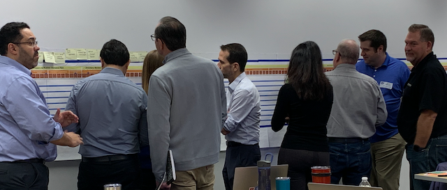
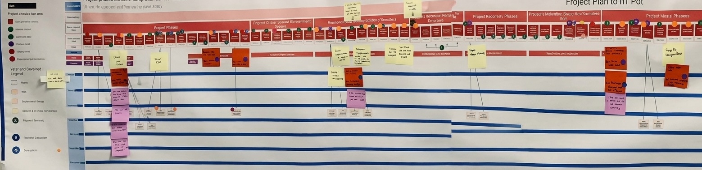
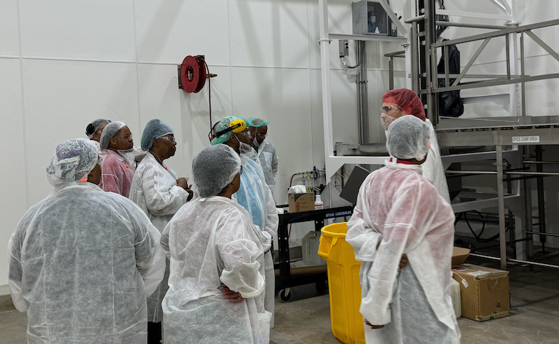
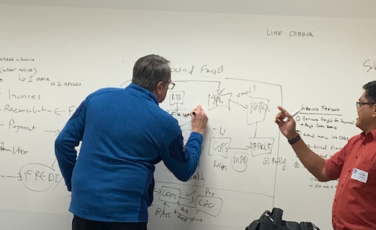
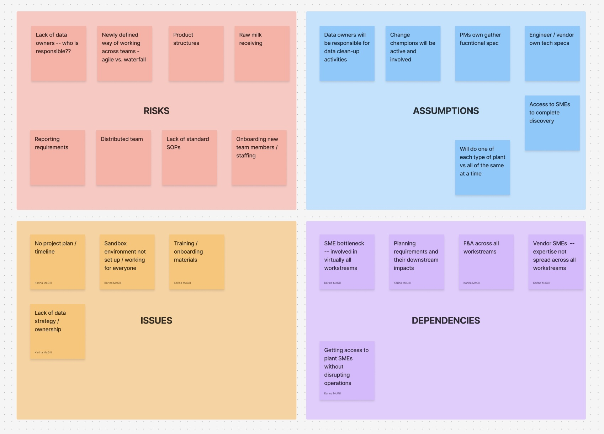

The problem
This Fortune 50 grocery manufacturer was undertaking its first substantial digital transformation of its manufacturing systems in decades, replacing end-of-life technologies and paper processes with a modern AI-powered ERP tech stack. Change of this scale impacted every part of the business:
- Demand and supply planning
- Procurement
- Plant and warehouse operations
- Quality assurance
- Finance and accounting
Everyone was working toward the same goal, but not from the same starting point: priorities competed across every group, technical scope stayed undefined, and nobody had agreed on who owned what data. This made creating a solid rollout and resourcing plan nearly impossible. Without an accurate, end-to-end understanding of how the business actually worked, every conversation about the future state was really a debate between people picturing a different present.
What I did
I proposed a weeklong onsite workshop built to close that gap: not another status meeting, but a structured effort to build the one shared, accurate picture of the business every function in the room could actually stand behind, and to get executive and cross-functional alignment on it. This was not an easy sell to our executive sponsors, as it would require bringing together a global team of over 60 people, coordinating multiple site visits, and, most importantly, stacking hands on a timeline, budgets, and a set of technical requirements.
I was able to secure approval for the workshop by showcasing an innovative approach: one that aligned deep understanding of people, processes, data, and technology into tangible artifacts that made clear where risks and opportunities lie.

Having a tangible view of business processes allowed the team to more quickly identify and discuss risks and technical considerations.
End-to-end service blueprint
Mapped the business end-to-end, workflow by workflow, capturing how work actually happened today, not how it was assumed to happen. We didn't stop there: these artifacts also mapped data clean-up and migration, integration, automation, and reporting needs, tying them back to in-scope and out-of-scope requirements and to the risks, assumptions, and operational impacts they surfaced.
Site visits & deep-dive interviews
The mapping didn't happen from a conference room. We ran site visits and deep-dive interviews directly with the people running the plants, surfacing the real variations, exceptions, and workarounds no org chart or SOP would have shown.
Data migration & clean-up assessment
Assessed the underlying data itself — quality, ownership, duplication — that would need to move into the new system, surfacing exactly where bad data would become a blocker later if it wasn't dealt with now.
RAID log
Surfaced risks, assumptions, issues, and dependencies that had been discussed informally for weeks but never written down where the whole room could see them together.

An excerpt of the end-to-end business process map, built from onsite site visits and interviews.

Site visits and deep-dive interviews with the people running the plants — capturing the real workflow variations no org chart would show.

An excerpt of the data migration and clean-up assessment — surfacing quality and ownership issues before they became blockers.

Risks, Assumptions, Issues, and Dependencies — a single running document that keeps everything that could derail a program visible in one place, instead of scattered across meeting notes.
Laying the business process map, the interview findings, the data assessment, and the RAID log out together (and tying all of it to a roadmap and milestone Gantt chart) made the trade-offs impossible to avoid: which paper processes had to be redesigned before they could be automated, whose data-ownership questions were blocking engineering, and where scope had to flex to hit a date that mattered to the business. The room stopped debating in the abstract and started making calls.
This was the day the project really started. Now we're on the same page.— Project sponsor, at the close of the alignment workshop
Outcome
That workshop became the catalyst for the rest of the program: the service blueprint, the data assessment, and the RAID log built that week became the foundation the rest of the AI-driven transformation got built on. With a shared, accurate picture of the business finally in place, and executive and cross-functional alignment behind it, the team that carried the plan forward through testing, training, and go-live delivered the rollout with zero plant downtime.